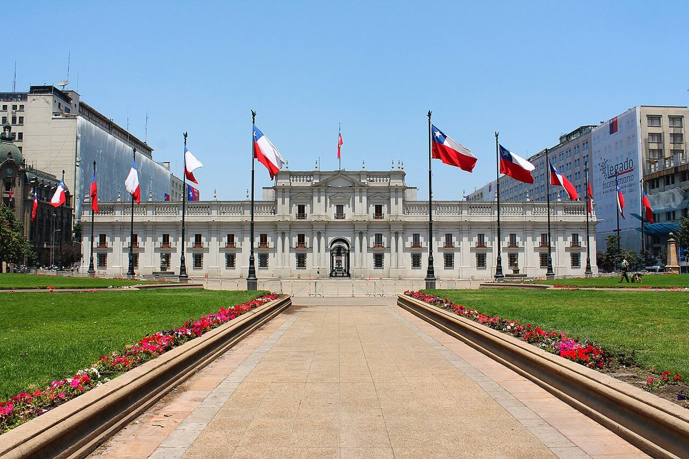

高棉拳智利培训班吸引65人参加 国际联合会计划拓展南美
在圣地亚哥举办为期三天的培训后，高棉拳国际联合会计划在巴西、阿根廷、乌拉圭、巴拉圭和玻利维亚开展培训。

发生了什么
据《高棉时报》报道，高棉拳国际联合会（KIF）在智利首次举办培训项目后，正计划在南美洲举办更多培训班。为期三天的“高棉拳南美培训班”于10月30日至11月1日在智利首都圣地亚哥举行，共有65名教练、专家和运动员参加。来自不同格斗项目背景的学员学习了柬埔寨这一国家武术的技术和传统。
《高棉时报》报道称，本次培训由旅居法国的柬埔寨人、波尔多“The Temple Kun Khmer”俱乐部负责人阿尔伯特·维拉·谢（Albert Veera Chey）受联合会委派主讲。联合会10月发布的通告曾表示，由其大师级教练里思·谢（Rith Chea）和劳·西纳（Lao Sinath）在智利和巴西授课，其中巴西研讨会定于11月8日至13日举行。

联合会的表态
高棉拳国际联合会秘书长、柬埔寨高棉拳联合会主席科夫·柴（Khov Chhay）在其官方脸书主页发表声明，称智利项目是高棉拳国际推广的重要里程碑。他感谢了智利组织者胡安·马塞洛·加列戈·席尔瓦（Juan Marcelo Gallardo Silva）和瓦尔德马尔·马尔多内斯（Waldemar Mardonez），以及Kombat Global总裁里克·申（Rick Shin）。
为何重要
这次培训建立在6月迈出的一步之上。据《金边邮报》报道，6月5日在巴西圣保罗举行的仪式上，联合会正式承认了巴西、阿根廷、乌拉圭、巴拉圭、智利、委内瑞拉、玻利维亚和瓜德罗普八个国家和地区的高棉拳代表。科夫·柴称这一认可是“高棉拳历史的新篇章”。
10月的培训内容包括高棉拳的历史和文化意义、技术、执教方法、运动员培养、比赛规则和安全标准。联合会还希望支持该地区的教练认证和训练中心建设。
下一步
高棉拳国际联合会计划将培训项目推广到巴西、阿根廷、乌拉圭、巴拉圭、玻利维亚等南美国家。其长期计划是培养教练、开设更多俱乐部并举办国际赛事，目标是最终进入奥运会。